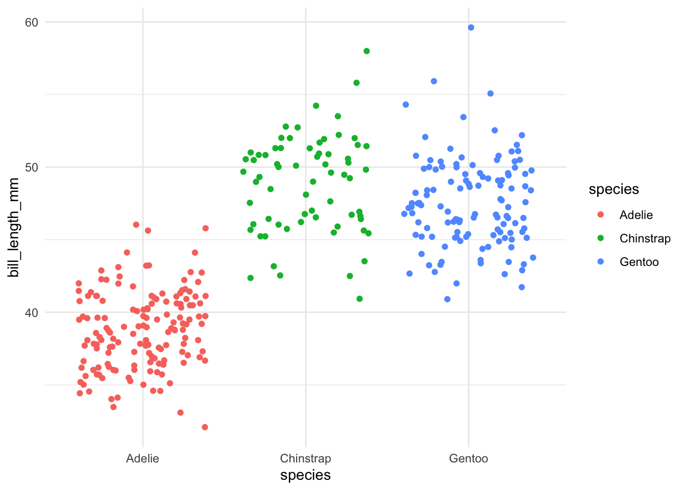

```{r}
library(tidyverse)
library(palmerpenguins)
```Quarto + JS
What is Quarto?
From Quarto.org:
“Quarto® is an open-source scientific and technical publishing system built on Pandoc
Create dynamic content with Python, R, Julia, and Observable
Author documents as plain text markdown or Jupyter notebooks.
Publish high-quality articles, reports, presentations, websites, blogs, and books in HTML, PDF, MS Word, ePub, and more.
Author with scientific markdown, including equations, citations, crossrefs, figure panels, callouts, advanced layout, and more.”
Get some data
Data from the Fire and Tree Mortality Database. See metadata for details.
```{r}
tree_mortality <- read_csv("tree_mortality.csv")
``````{r}
# How many of each species in the dataset?
unique_trees <- tree_mortality |>
group_by(Genus_species) |>
summarise(n = n_distinct(TreeNum))
# write_csv(unique_trees, "unique_trees.csv")
```Circle packed bubble chart of tree counts
Working in Observable, then importing:
So I went over to Observable and made a notebook where I could easily test, break, & fiddle with my visualization.
Using: D3 Circle Packing / Bubble Chart
Then import it as expected:
```{ojs}
import {chart} from "@allisonhorst/fire-mortality-tree-counts"
``````{ojs}
chart
```Or all JS in Quarto:
Work in OJS cells:
```{ojs}
tree_data = FileAttachment("unique_trees.csv").csv({typed: true})
``````{ojs}
BubbleChart(tree_data, {
label: (d) =>
[...d.Genus_species.split("_"), d.n.toLocaleString("en")].join("\n"),
value: (d) => d.n,
group: (d) => d.Genus_species.split("_")[0],
width: 1200,
title: (d) =>
`${d.Genus_species.replace("_", " ")}\n${d.n.toLocaleString("en")}`
})
``````{ojs}
import {BubbleChart} from "@d3/bubble-chart"
```Interactivity maintained
Copied from Mike Bostock’s Force Directed Graph example:
```{ojs}
import {ForceGraph} from "@d3/force-directed-graph"
``````{ojs}
miserables = FileAttachment("miserables.json").json()
``````{ojs}
ForceGraph(miserables, {
nodeId: d => d.id,
nodeGroup: d => d.group,
nodeTitle: d => `${d.id}\n${d.group}`,
linkStrokeWidth: l => Math.sqrt(l.value),
width,
height: 600,
invalidation // a promise to stop the simulation when the cell is re-run
})
```Pass values / objects between languages
```{r}
r_val <- 10
ojs_define(ojs_val = r_val)
``````{ojs}
ojs_val + 12
```Other highlights
- Visual editor
- Multi-column organization & format customization
```{r}
#| column: screen-inset-shaded
#| layout-nrow: 1
ggplot(data = penguins) +
geom_point(aes(x = flipper_length_mm,
y = body_mass_g,
color = species)) +
theme_minimal()
ggplot(data = penguins) +
geom_jitter(aes(x = species,
y = bill_length_mm,
color = species)) +
theme_minimal()
```

Citations (incl. integration w/ Zotero) & footnotes (Waskom et al. 2017)
Document conversions (e.g. from .qmd to .ipynb & back)
Resources
- Quarto Official: quarto.org
- Collection of Quarto creations & resources (websites, books, talks, examples, etc.): Awesome Quarto
- “We don’t talk about Quarto” by Alison Hill
References
Waskom, Michael, Olga Botvinnik, Drew O’Kane, Paul Hobson, Saulius Lukauskas, David C. Gemperline, Tom Augspurger, et al. 2017. “Mwaskom/Seaborn: V0.8.1 (September 2017),” September. https://doi.org/10.5281/zenodo.883859.